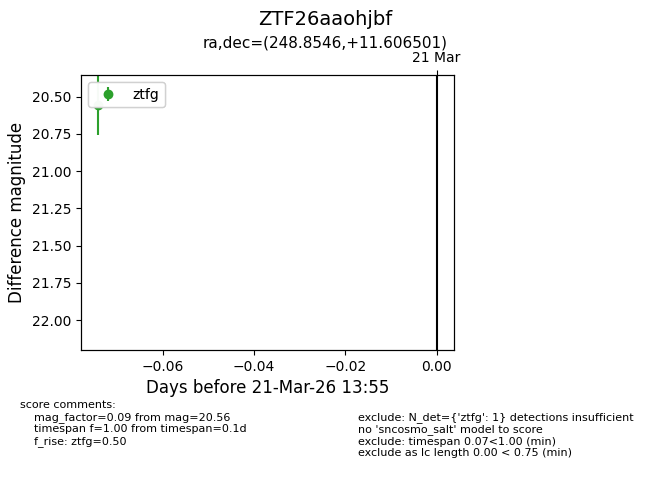
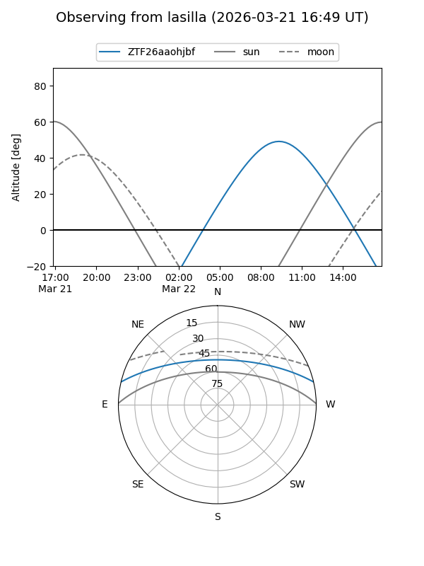
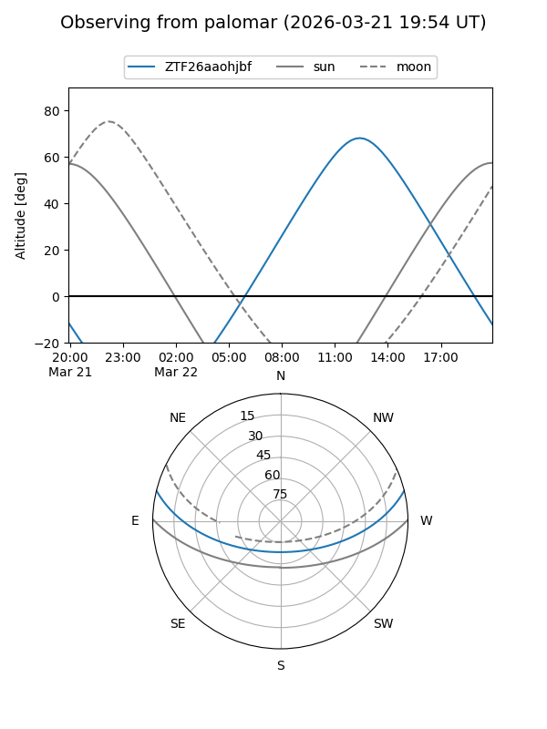

ZTF26aaohjbf
Target ZTF26aaohjbf at 2026-03-21 13:57
Aliases and brokers:
FINK: link
Lasair: link
ALeRCE: link
alt names
ZTF26aaohjbf (ztf,fink_ztf)
Coordinates:
equatorial (ra, dec) = 248.8546,+11.60650
equatorial (HMS+DMS) = 16:35:25.11,+11:36:23.40
galactic (l, b) = (27.9529,+35.40124)
Flags:
Photometry:
last ztfg=20.56
1 ztfg detections
Lightcurve

Visibility


Additional plots